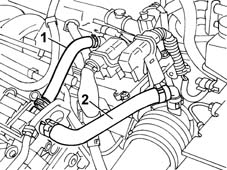

FUNCTION
- Path
- Descriptions > 10 ENGINE > 1080 EMISSION CONTROL SYSTEM > 1080D CRANKCASE VAPOUR/GAS RECIRCULATION SYSTEM > FUNCTION
- Kind
- system description
- Applies to
- engines: 2.0 TB; all production periods
- Interactive page
- https://sloeber94.github.io/elrnDB-lThss/en/#/629977
Applies to: engines: 2.0 TB; all production periods
During engine operation, oil vapours from the crankcase collect in the cylinder head.
A proportion of the oil vapours condense and fall into the crankcase. The remaining vapours are directed to the intake through pipes (1) and (2).
At idle speed, oil vapours flow to the intake through pipe (1) - or pipe (2) at higher loads.
